As my first data visualization project, I presented a data-driven story to explore how Ukraine conflict will shake Europe's Reliance on Russian crude oil supply. The project was designed and completed during Infographics and Data Visualization class and was instructed by Professor Alberto Cairo.
● Topic: The Biggest Weapon: How Russian crude oil shake the market as Ukraine conflict looms?
● Timeline: four weeks
● Tools: Adobe Illustrator, Excel, Tableau, Flourish
● Process: locate a focus, find the data, select infographics, create drafts, visualize the story
Locate a Focus
Among the assigned topics, I was most attracted to Energy dependence and independence idea. However, this is only a general topic. In order to create a “story”, locating a specific focus on the narrative, including what, where, when, why and how it happens becomes essential. In the case, I started to look for a particular narrative that I might be appealed to. Below tweets are the first triggers to my story:
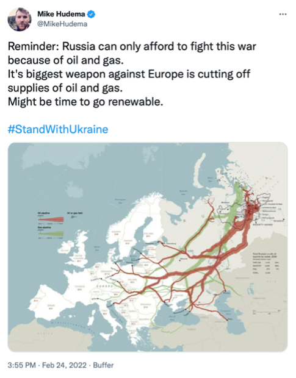
Trigger tweet 001 from Mike Hudema
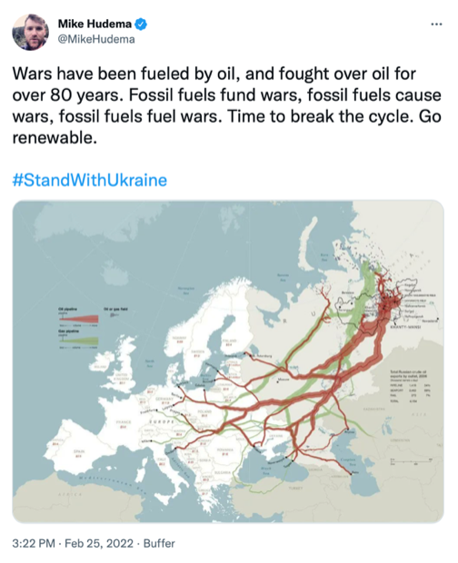
Trigger tweet 002 from Mike Hudema
I started to wonder: “Why can Russia only afford this war?”, “Why Russian oil and gas are the biggest weapon against European continent?” and “Why fossil fuels matter so much a lot to countries all over the world?”
My second trigger was an article published by The New York Times , How a Ukraine Conflict Could Reshape Europe's Reliance on Russia, talking about European countries' dependency on Russian natural gas resources.
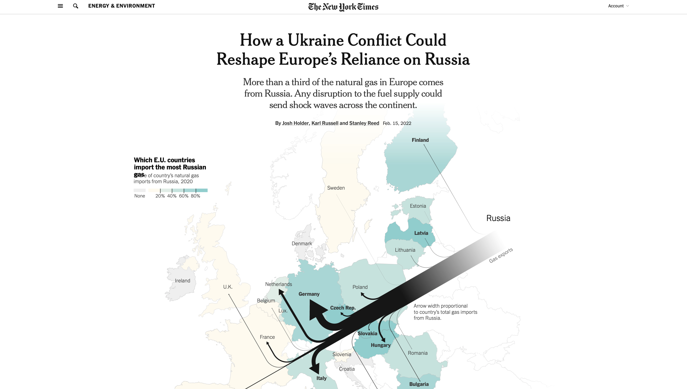
A screenshot of NYT's article of How a Ukraine Conflict Could Reshape Europe's Reliance on Russia
Based on the findings, Russia remains an indestructible status when it comes to natural gas and crude oil supply, so I thought it would be a good idea to track and analyze Russian crude oil supply and weave a data-driven story about The Biggest Weapon: how Russian crude oil shake the market as Ukraine conflict looms?
Structure and Data
After locating a story focus, the next step was to build a possible structure for the narrative.
I put emphasis on two things: how affluent Russia's crude oil is and how dependent European countries are upon Russian crude oil, which help demonstrate the argument that any disruption to the Russian oil supply could shake the current market across Europe.
To present how affluent Russia's crude oil is, I did research on Russian yearly oil reserves and production data. I downloaded world oil reserves country ranking in 2021 (including 187 countries) from The Global Economy database and found a clean data chart of top 10 oil producers and share of total world oil productionin 2020 at U.S. Energy Information Administration website..
For the other side of story, to present how dependent European countries are, I went to Eurostat, a statistical database of the European Union, for further investigation. By its interactive dataset, I filtered to download 17 countries' crude oil imports from Russia in 2020 and their crude oil dependency rates outside Europe over the past 30 years.
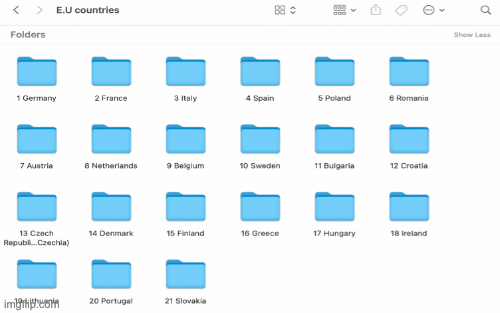
My data analysis process 1.0
Also, in order to better understand how the current oil market shakes due to the Ukraine conflict, I tracked the crude oil price change flow at EIA after Russia's invasion on Feb 24, 2022 and downloaded the daily data of Europe Brent Spot Price from 1985 till now.
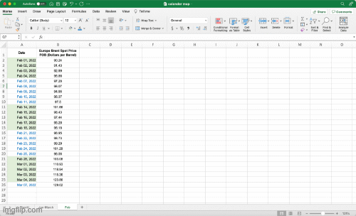
My data analysis process 2.0
Infographics Selection
First, I chose traditional Bar Graph to visualize world oil reserves country ranking. There are only two variables here: country and its oil reserve value. The two variables can be neatly presented by bar graph without confusing my readers by any chance. Also, I would want to show a sharp comparison between country's oil reserve value so that people can be aware that Russia has a relatively high ranking of oil reserves among countries.
Next part goes to Russian oil production share. My original intention is to use a full Pie Chart to display Russia's share of total world oil production by percentage. However, when I looked back to the data itself, though Russia's 11% share makes it the third largest oil producer in the world, a full pie chart doesn't really help Russia stand out. In the case, I found it more visually effective to display only one slice from the pie chart that represents Russia's share. Also, one slice saves more space for other graphic designs.
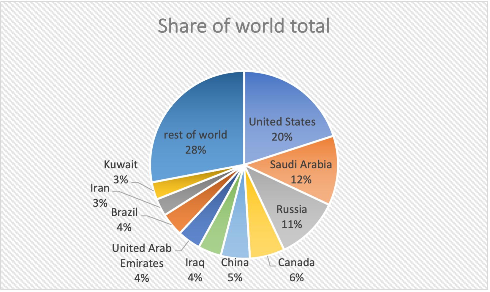
Before | The original full pie chart
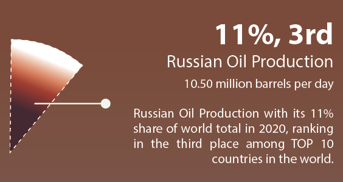
After | One slice from the original pie chart
Next, to present how dependent European countries are from oil energy produced outside Europe, at very first, I mispresented the dependence rate with a dot plot in my second draft. My intention was to show a general picture of How dependent those countries are (since most dots are positive values and are placed around 80% to 100%) but I failed to spot a timeline change in this graphic, which made it less readable and understandable.
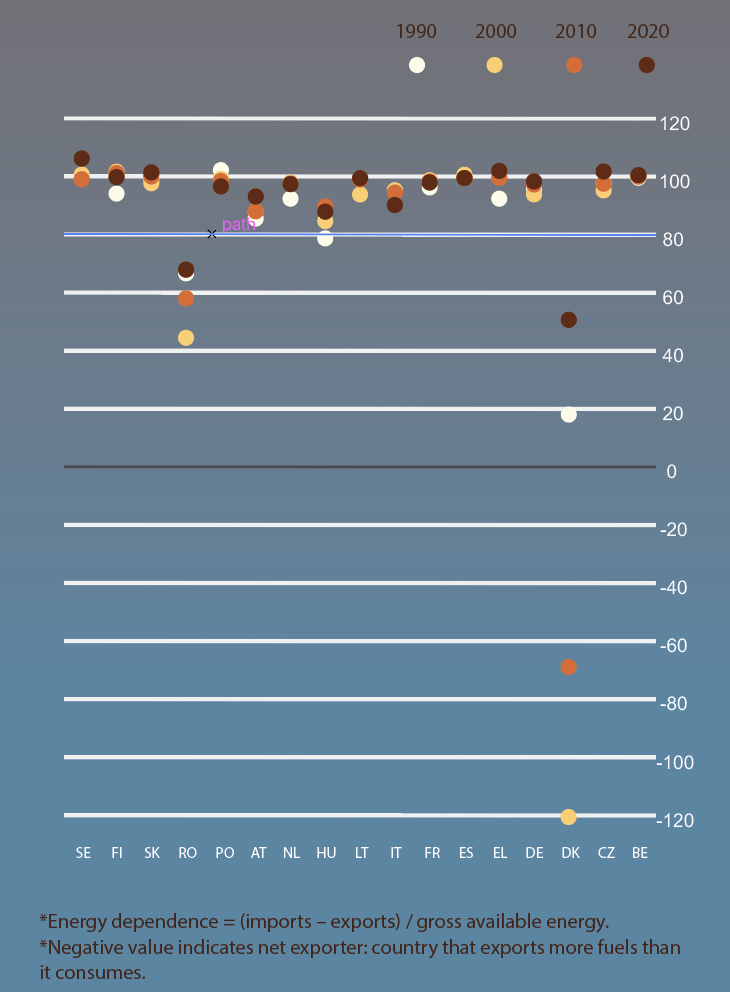
Mispresent the dependence rate with a dot plot
To fix the problem, I received a thorough feedback from Professor Cairo. He suggested me using multiple trellis charts to replace the original dot plot. However, when I first chose bar graphs to create trellis charts, I found it was hard for people to tell the tiny difference between the data as most values were so close to each other around 90% (see below) while the minimum rate could go lower to -120%. That way, I won't be able to uniform the defaults on Y axis.
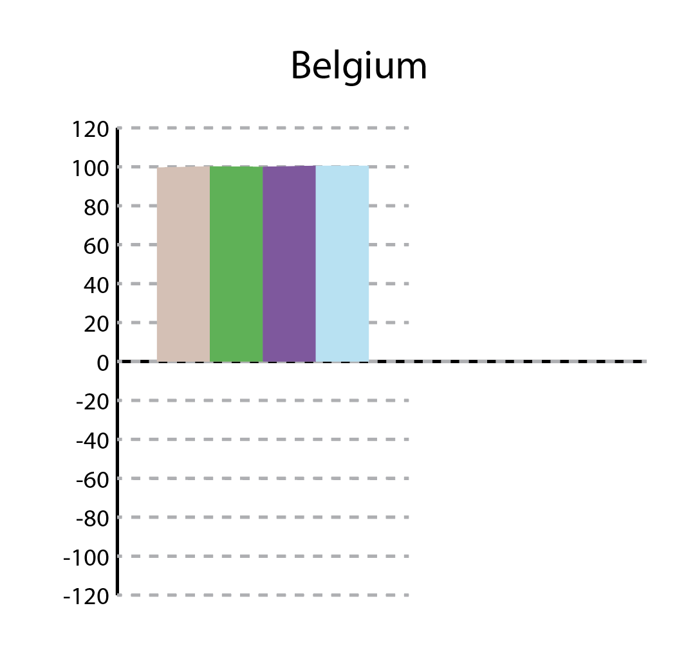
One of the multiple trellis bar charts by which tiny difference between the data are hard to be noticed
Again, instructed by Professor Cairo, I changed to the line charts with which tiny changes could be more noticeable than before. Also, I gave up visualizing the only country Demark with negative values and explained it as an outlier in the caption.
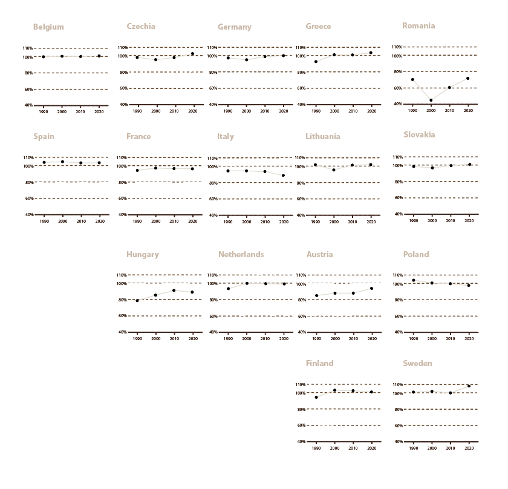
Change to multiple trellis line charts
To showcase which European countries has imported most Russian crude oil in 2020, I chose a Flow Map as my final choice. What I am looking for here is a graph that is able to show how migration is distributed geographically, in which case a Flow Map drawn from one point of origin before branching out of its flow lines is a perfect match for the data. In this section, Russia is the “one point of origin” that exports its crude oil to different European countries. The amount of migration in a single flow line will be demonstrated by its thickness, representing each country's import of crude oil from Russia in 2020.
Last section on the page is about crude oil price change flow after Russia's invasion of Ukraine on Feb 24, 2022. There are two parts included: a line chart showing the price fluctuation over the past 30 years and a calendar map focusing on how prices have gone up and down during the whole month of February in 2022. The main reason I chose a line chart for the overall price fluctuation is because it can clearly show a trend that displays quantitative values over a continuous interval. And to better present a detailed prices change in February, a calendar map to visualize data through color encoding can be a really good fit here. I used tableau to create a heatmap first then changed to a calendar map with labeling spot prices at certain points.
Draft and Visualization

First draft | March 7

Second draft | March 20

Third draft | March 27

Final output | March 29
My very first draft of this project was way too different than the final output. I think the reason behind it is because I didn't know how to pre-process the data before I combined everything together on a tabloid size poster. For example, I planned to design a flow map, but I didn't know how much space it would take until I drew the map myself and realized only when it took nearly 1/4 of the page was it readable enough for my readers.
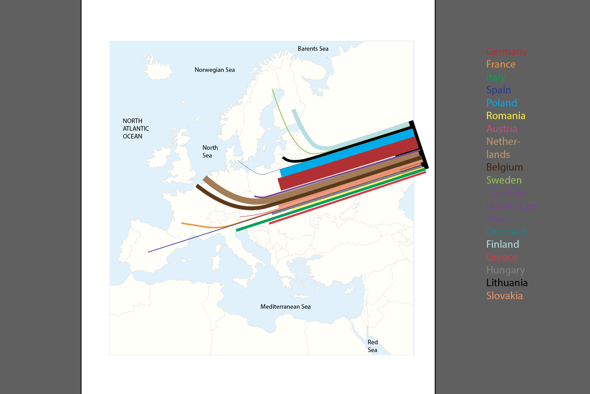
Flow map design 2/4
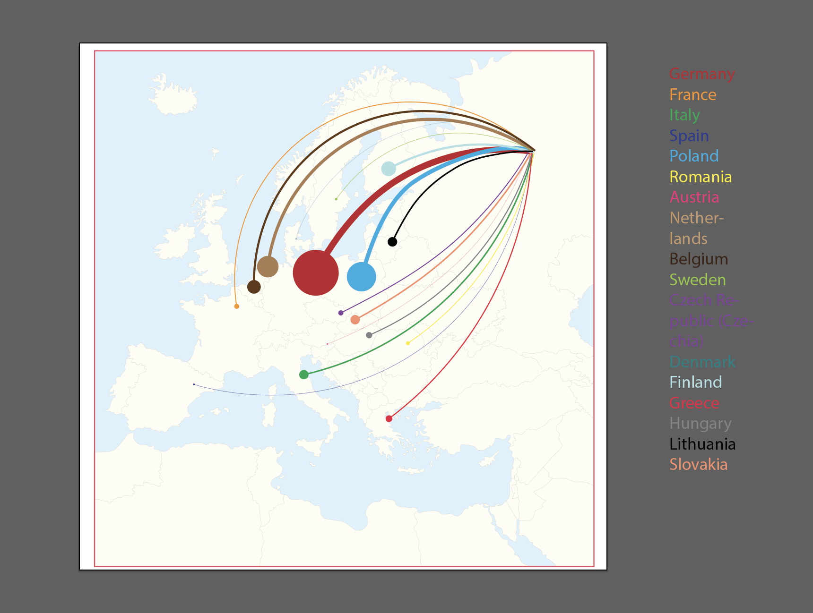
Flow map design 3/4
From the first to the final piece, I changed the types of graphics I was using for several times either to match the holistic style or to save more space for the map and the texts.
Also, choosing colors for background was struggling. I was planning to use white, red and blue (Russian national flag's colors) for the background at first, but it turned out too many colors would definitely bother people to read the content. So, I excluded the white for a better clarity.
As the overall visualization became darker, I chose lighter color to stylize the map and most of the texts.
Challenge and Reflection
The major challenge I have encountered with for this project is to mispresent part of the data with inappropriate types of graphics. So, look back at the whole process, I would say:
1) Don't rush into any visualization at an early stage. Take time to dive into data and be careful with graphics selection. This is the real step that can help you save time and wasted efforts.
2) Then, always be alert to the beautiful graphics. As a starter, creating a readable story is your priority. Try to start with easy graphics (might be boring but still worth the attention!) and learn from them. This is the base and foundation of creating other stylistic graphics with complexity.